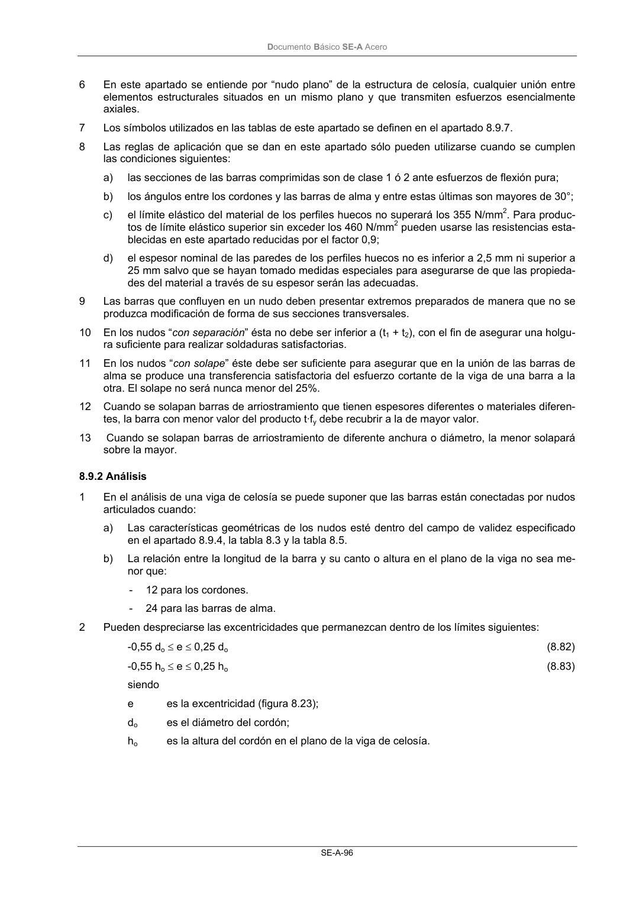

DB-SE-A Acero · edición 2007-10-23 · capa oficial
Documento DB-SE-A-oficial · SHA-256 del PDF 9ed9ea694aabfbda3bfbbef40dfe9223fde05d13c35bc2ba9751e5a96a22a64f
Copia fiel del PDF fuente · Fuente oficial
Ficha de la disposición en la fuente oficial
Formatos: JSON del segmento · Markdown
8.9.2 Análisis 1 En el análisis de una viga de celosía se puede suponer que las barras están conectadas por nudos articulados cuando: a) Las características geométricas de los nudos esté dentro del campo de validez especificado en el apartado 8.9.4, la tabla 8.3 y la tabla 8.5. b) La relación entre la longitud de la barra y su canto o altura en el plano de la viga no sea me- nor que: - 12 para los cordones. - 24 para las barras de alma. 2 Pueden despreciarse las excentricidades que permanezcan dentro de los límites siguientes: -0,55 do≤ e ≤ 0,25 do (8.82) -0,55 ho≤ e ≤ 0,25 ho (8.83) siendo e es la excentricidad (figura 8.23); do es el diámetro del cordón; ho es la altura del cordón en el plano de la viga de celosía. DocumentoBásico SE-A Acero SE-A-97 Figura 8.23 Excentricidad de los nudos
